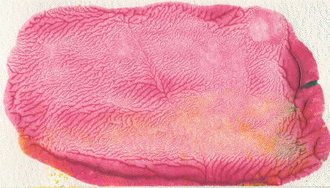

| Though its development can be traced through George Sand and Alexander Cozzens to Leonardo da Vini, decalcomania saw fairly wide use in the 1930s and 40s by artists including Oscar Dominguez and Max Ernst. |
| Decalcomania is a method for producing delicate branching patterns by applying paint to a flat surface, pressing another surface onto the paint, and pulling away the top surface. |
| As the top surface is pulled away, the paint adheres to both top and bottom, stretching as the distance increases. |
| The paint pulls into ridges between the surfaces; the thickness and spacing of the ridges depends on the viscosity of the paint and the speed with which the surfaces are pulled apart, among other things. |
| As the distance between the surfaces increases, the ridges coalesce and a branching pattern results. |
| This is most clearly seen if the top surface is pulled away from one side rather than lifted straight up off the bottom surface. |
Here is an example. Click the picture to enlarge in a new window.
|  |
Return to Finger Paint Lab.